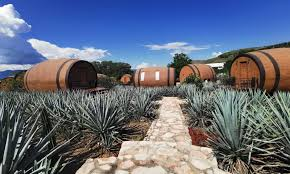
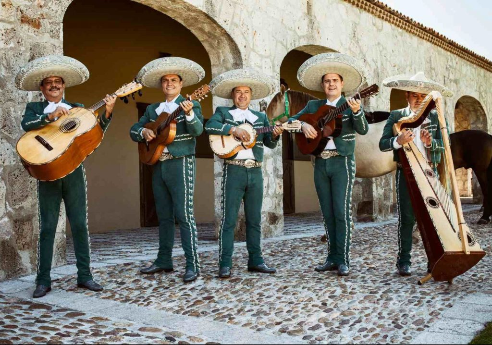
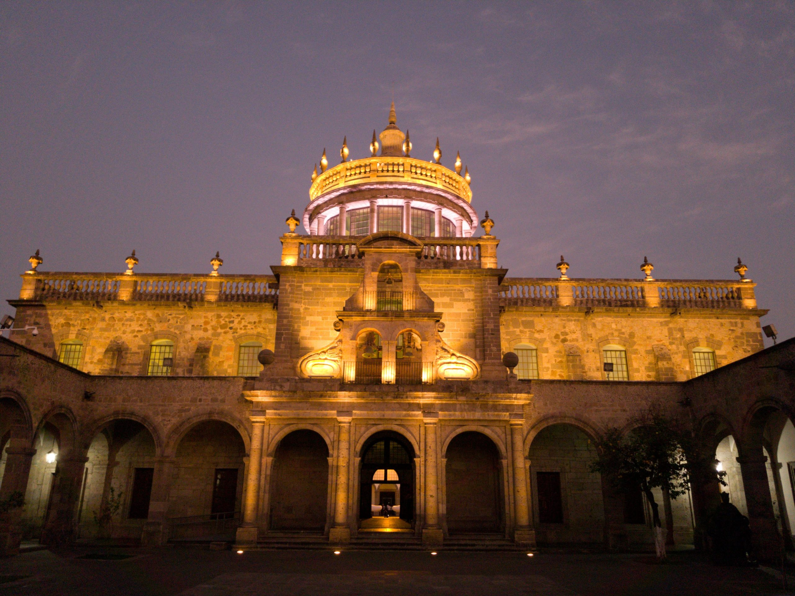

Guadalajara se caracteriza como un destino turístico por su rica cultura, historia, gastronomía, y ambiente vibrante. Es conocida por la música mariachi, el tequila, y su arquitectura colonial. Ofrece una amplia variedad de actividades, desde visitar monumentos históricos como la Catedral Metropolitana y el Hospicio Cabañas, hasta disfrutar de la vida nocturna en cantinas y plaza

Un fin de semana en Tequila Jaliso
En la zona de Tequila, Jalisco, puedes disfrutar de diversos lugares turísticos relacionados con el tequila, además de otros atractivos culturales y naturales.
Escuchar música en vivo, directo del corazón
Los mariachis de Guadalajara, conocidos por su música tradicional mexicana, se caracterizan por su vestimenta de charro, su amplio repertorio de canciones y su uso de instrumentos de cuerda como la vihuela, el guitarrón, la guitarra, y violines, así como trompetas.


Conoce la historia de un increíble lugar
El Hospicio Cabañas en Guadalajara, Jalisco, es especial por varias razones: su arquitectura neoclásica, su historia como orfanato y hospicio, la presencia de los murales de José Clemente Orozco y su declaración como Patrimonio de la Humanidad por la UNESCO.
México: un país que te sorprenderá con su diversidad, su gente cálida y su rica herencia cultural
Aquí te dejamos más opciones que puedes visitar en Guadalajara